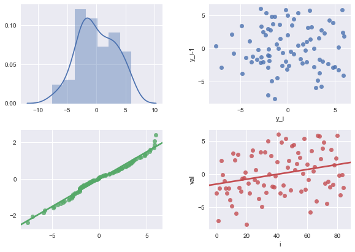

	<div id="main-content" class="main-content main-content-crafts">
		<!--Photo Gallery-->
		<section class="crafts">
			<h1>Visualizations</h1>
			<!-- <div class="photo-grid"> -->
				<div class = 'large'>
					<div class = 'med'>
						<div class="photo-cell a med large ">
							<p>Amanda is well versed in creating visualization that help to understand and predict data performance. Along with creating visualizations, Amanda is well versed in data extraction, data mining, and data manipulation with large and small datasets. </p>
						</div>
						<div class="photo-cell b med large">
							<p>Here is just a few of the visulations and predictive models Amanda is about to do: </p>
							<ul>
								<li>Linear regressions</li>
								<li>Histograms</li>
								<li>Pie charts</li>
								<li>Heatmaps</li>
								<li>QQ-plots</li>
								<li>Box plots</li>
								<li>PCA correlation</li>
								<li>Decision Tree Regressions</li>

							</ul>
						</div>
						<div class="photo-cell d med large">
							
						</div>
						<div class="photo-cell e med large">
							
						</div>
						<div class="photo-cell f med large">
							
						</div>
					</div>
					<div class="photo-cell c large z">
						
					</div>
					<div class="photo-cell c large x">
						
					</div>
					<div class="photo-cell c large y">
						
					</div>
					<div class="photo-cell c large w">
						
					</div>
				</div>	
			</section>
	</div>
	